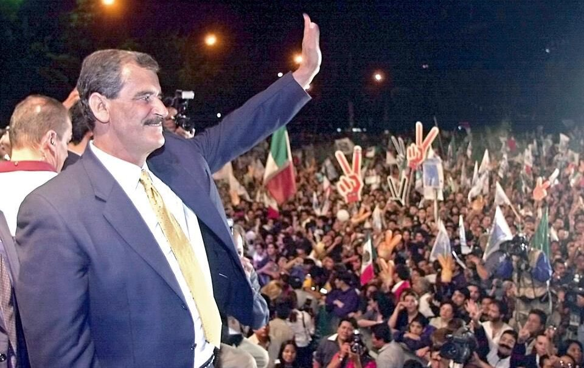

Contexto Histórico: PRI vs PAN en los 2000
Línea de Tiempo
Relaciona los eventos políticos más importantes de México:
- 2000: Vicente Fox (PAN) gana la presidencia, marcando el fin de más de 70 años de gobiernos del PRI y el inicio de la alternancia democrática en México.
- 2006: Felipe Calderón (PAN) asume la presidencia tras una elección muy cerrada frente a Andrés Manuel López Obrador. Su sexenio estuvo marcado por el inicio de la “guerra contra el narcotráfico”.
- 2012: Enrique Peña Nieto (PRI) regresa al partido al poder, impulsando reformas estructurales pero enfrentando críticas por corrupción y violencia.
- 2018: Andrés Manuel López Obrador (MORENA) gana con amplio margen, representando un cambio hacia un proyecto político de izquierda y con énfasis en programas sociales.
- 2024: Claudia Sheinbaum (MORENA) se convierte en la primera presidenta de México, consolidando la continuidad del proyecto político iniciado en 2018 y marcando un hito histórico en la representación femenina en el poder.
Análisis del Contexto
Las elecciones del año 2000 marcaron un cambio importante en la política mexicana. Después de más de 70 años de gobierno del PRI, el PAN ganó la presidencia con Vicente Fox. Este momento representó una transición democrática y generó diferentes opiniones en la sociedad, entre esperanza y dudas sobre el futuro del país.
